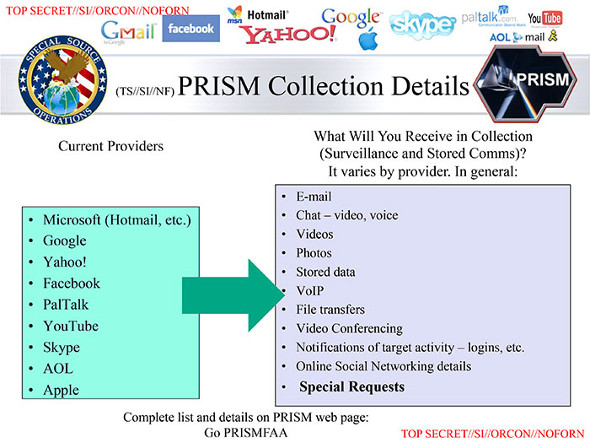
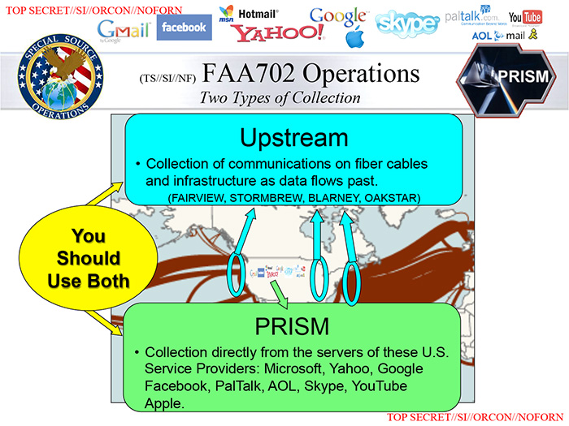
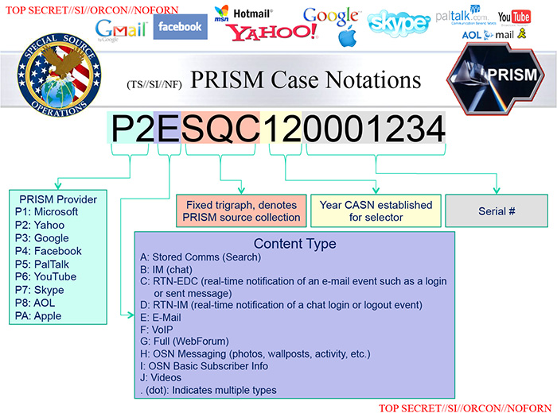
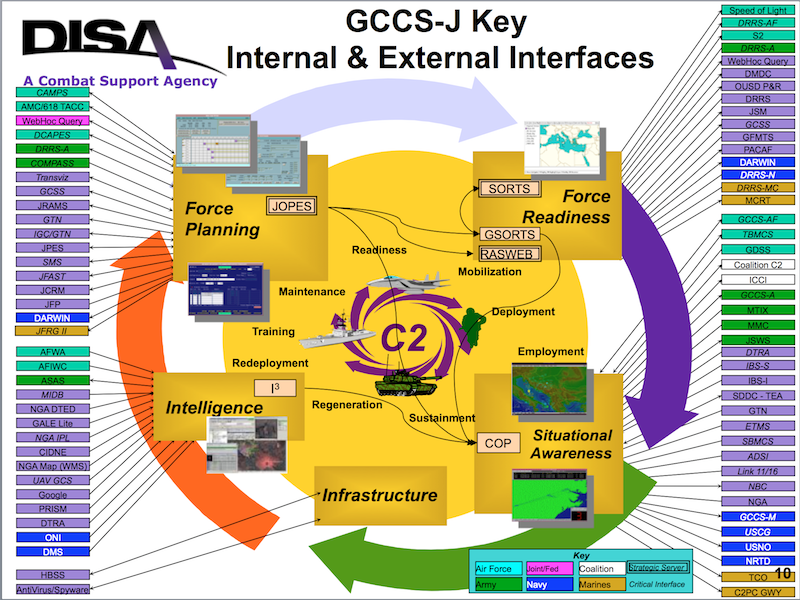

Vertraulichkeit ist die Eigenschaft einer Nachricht, nur für einen beschränkten Empfängerkreis vorgesehen zu sein. Weitergabe und Veröffentlichung sind nicht erwünscht. Vertraulichkeit […] kann auch durch technische Mittel gefördert oder erzwungen werden.
In der Informationssicherheit bezeichnet Authentizität die Eigenschaften der Echtheit, Überprüfbarkeit und Vertrauenswürdigkeit. […] Durch Authentifikation des Datenursprungs wird nachgewiesen, dass Daten einem angegebenen Sender zugeordnet werden können, was durch digitale Signaturen ermöglicht werden kann.
Anonymität ist der Zustand, wenn eine Person, eine Gruppe, eine Institution oder eine agierenden Struktur nicht identifiziert werden kann.